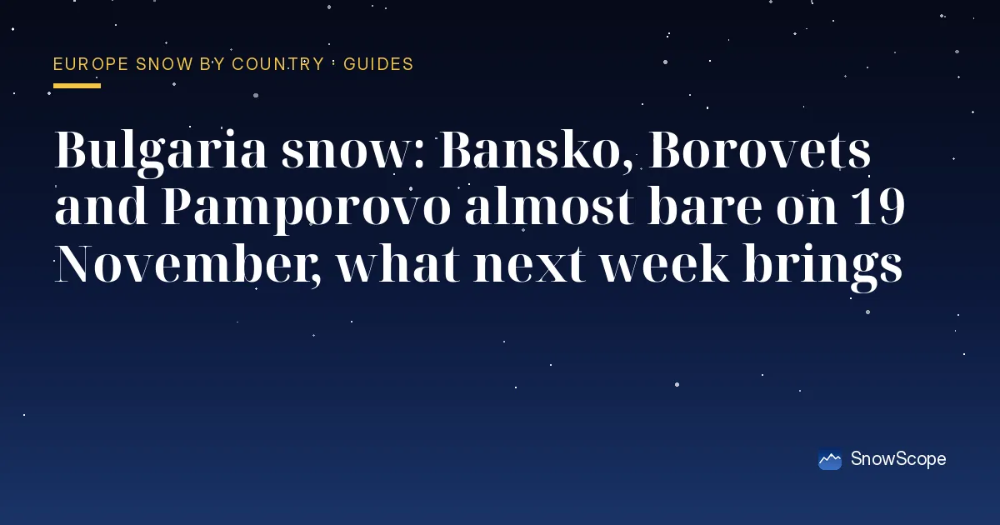
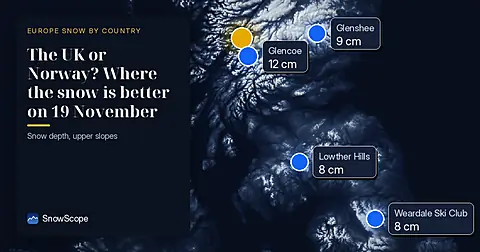

Bulgaria snow: Bansko, Borovets and Pamporovo almost bare on 19 November, what next week brings
Bulgaria missed the snow that whitened the western Balkans this week. While Slovenia, Croatia and Serbia had up to 39 cm on their upper slopes last weekend, Rila and Pirin only collected a few centimetres at a time. On Thursday 19 November, just 2 of Bulgaria's 11 ski areas have any snow on their upper slopes, Borovets and Bansko with 2 cm each, and Pamporovo and Vitosha are bare.
See the live snow forecast for Bulgaria in the SnowScope appSnow depth, powder alerts and the 3D map, free.
Where there is snow today
Only the very top of Bulgaria's two big resorts is white, and barely. Borovets, whose highest lifts reach 2,538 m below Musala, has 2 cm on its upper slopes. Bansko, topping out at 2,516 m on the Todorka ridge in Pirin, has 2 cm as well. That is not a ski base: it is a dusting on rock and grass.
Everywhere else the slopes are bare: Pamporovo and Chepelare in the Rhodopes, Vitosha above Sofia, Malyovitsa and Panichishte in Rila, Dobrinishte and Kartala in Pirin.

A week of small falls
Rila and Pirin did get snow this week, just not much at once. The upper slopes of Borovets picked up 2 cm on 14 November, 2 cm on 15 November, 4 cm on Monday 16 November, 1 cm on Tuesday, 2 cm on Wednesday and 1 cm today: about 12 cm over the week. Bansko had a similar run, also adding up to about 12 cm. Kartala and Dobrinishte got about 8 cm each, Vitosha about 7 cm.
None of it built a cover. Each small fall melted or blew away before the next one came. Bansko's upper slopes never had more than 4 cm on the ground this week, on Monday 16 November, and Borovets stayed between 2 and 4 cm from Saturday on.
A week ago it looked better
On 12 November, the highest slopes still held the last of an earlier snowfall. Borovets had 11 cm on its upper slopes, Panichishte 12 cm near the Seven Rila Lakes, and Pamporovo 7 cm, its only snow of the month so far. The map above shows that day.
Mild air then took most of it within a day: on 13 November Borovets was down to 8 cm, Panichishte to 3 cm and Pamporovo was bare. Since then the Rhodopes have had no new snow at all.
Is this unusual?
Not really. Bulgarian resorts rarely have natural snow worth skiing in mid-November; the big ones start the season in December, with their own snow on the main runs and help from the first cold spells. A green Pamporovo on 19 November is normal; a white one would be news.
What matters more is the coming fortnight, when nights get cold enough for lift operators to start making snow and when the first big storms from the Mediterranean can reach Rila and Pirin.
The week ahead: one chance, on Monday
Friday 20 November is dry. Saturday 21 November brings a trace to Borovets, about 1 cm at most. The one snowy day in the forecast is Monday 23 November: Borovets gets 1 to 12 cm on its upper slopes, with 3 cm in the middle forecast, and Bansko 0 to 4 cm, middle none. The rest of the week stays mostly dry.
Over the whole week from 20 to 26 November the middle forecast adds up to about 5 cm for Borovets (1 to 14 cm) and 1 cm for Bansko (0 to 6 cm). Pamporovo and Vitosha get nothing in any forecast. If the highest forecast for Borovets comes true, the top of Rila could be properly white by Tuesday 24 November; if not, Bulgaria waits for December.
Planning a trip
For a ski trip to Bulgaria, look at December and check each resort's own opening news; nothing this week changes that. If you want snow in the region now, Slovenia's Julian Alps have fresh snow today, and Durmitor in Montenegro keeps a thin cover on Savin Kuk.
Hikers heading to Musala or Vihren should expect patchy snow and ice near the summits after Monday, even if the slopes below stay brown.
Tips for skiers
- Today: 2 cm at the top of Borovets and Bansko, bare everywhere else.
- One chance of snow: Monday 23 November, mostly on Rila (Borovets).
- Bulgarian resorts usually open in December: check each resort's own news.
More maps (external sites)
About these numbers
Snow on the slopes: the upper slopes of each ski area on SnowScope's daily snow map. Measured snow: weather stations, read at 07:00 local time. Coming snow: the lowest, middle and highest forecast for each resort's top lift.
Cite this report
For research, teaching or the press: the numbers and charts are free to reuse under CC BY 4.0 with this citation.
SnowScope (2026), Bulgaria snow: Bansko, Borovets and Pamporovo almost bare on 19 November, what next week brings, https://snowscope.app/blog/en/2026/11/bulgaria-snow-bansko-borovets-pamporovo-19-november-2026.html, accessed 2026-11-19
SnowScope (Atlas Labs). (2026, November 19). Bulgaria snow: Bansko, Borovets and Pamporovo almost bare on 19 November, what next week brings. SnowScope snow reports. https://snowscope.app/blog/en/2026/11/bulgaria-snow-bansko-borovets-pamporovo-19-november-2026.html
BibTeX
@misc{snowscope2026bulgariasnowbanskoborove,
author = {{SnowScope (Atlas Labs)}},
title = {Bulgaria snow: Bansko, Borovets and Pamporovo almost bare on 19 November, what next week brings},
year = {2026},
month = nov,
howpublished = {\url{https://snowscope.app/blog/en/2026/11/bulgaria-snow-bansko-borovets-pamporovo-19-november-2026.html}},
note = {Published 2026-11-19 21:45 UTC; accessed 2026-11-19}
}· CC BY 4.0 · Methods, data and tools →
Follow Bulgaria
Free: a message when fresh snow is coming, and the forecast every morning.
More snow reports

On 19 November, 142 Norwegian resorts have snow on upper slopes. Riksgränsen leads with 167 cm; 89% of high ground is white.

Fresh snow hit Italy's high ranges hard. The Aosta Valley received 215 cm in 72 hours; the Piedmont Alps got 76 cm. Data from 19 November.

UK has 10% snow cover with 16 cm at Nevis Range; Norway reaches 89% with 167 cm at Riksgränsen. Data from 19 November.